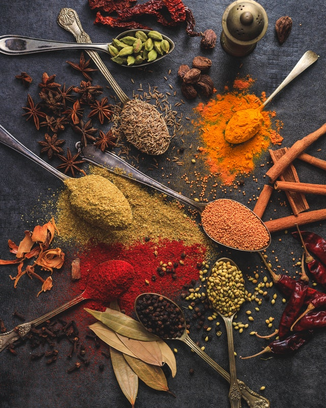

Garam Masala

Description
Recipe sourced from "allrecipes" Garam Masala
This is a quick Garam Masala (Indian spice) mix. Garam Masala is better when made with whole spices that have
been roasted and ground, but this is a quick and easy substitute that's pretty good.
Ingredients
- 1 tbsp ground cumin
- 1 ½ tsp ground coriander
- 1 ½ tsp ground cardamom
- 1 ½ tsp ground black pepper
- 1 tsp ground cinnamon
- ½ tsp ground cloves
- ½ tsp ground nutmeg
Steps
- Mix all ground ingredients in a bowl
- Place mixture in an airtight container
- Store in a cool, dry place